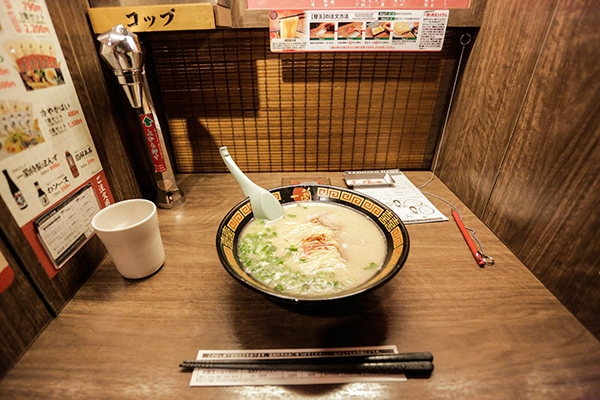

Restaurants :
Japan's dining scene caters to a wide range of budgets, offering everything from high-end gourmet experiences to budget-friendly options.
Upscale restaurants provide exquisite multi-course meals and expertly crafted sushi, showcasing the finest seasonal ingredients and meticulous preparation.
For those on a budget, casual eateries such as izakayas, ramen shops, and conveyor belt sushi offer delicious and affordable meals without compromising on quality.
Street food stalls and convenience stores also feature tasty, inexpensive options, making Japan a culinary paradise for every type of diner.
|
Narisawa is a renowned Michelin-starred restaurant in Tokyo, celebrated for its innovative and sustainable approach to French-Japanese cuisine. Led by Chef Yoshihiro Narisawa, the restaurant offers a unique dining experience focused on seasonal ingredients and culinary artistry, making it a top destination for food enthusiasts seeking exceptional gastronomy in Tokyo. |
Kitcho is a prestigious Michelin-starred restaurant group in Japan, renowned for its exquisite kaiseki cuisine. Founded on the principles of tradition and meticulous craftsmanship, Kitcho offers a luxurious dining experience where each dish reflects seasonal flavors and the essence of Japanese culinary heritage. It's a destination cherished by connoisseurs seeking unparalleled refinement and culinary artistry. |
Nikutei Futago in Shinjuku offers an intimate yakiniku experience with a focus on quality wagyu beef sourced from Hyogo and Miyagi prefectures. Guests can choose private, semi-private, or table seating to enjoy a diverse menu of over 80 dishes. The restaurant exclusively serves dinner courses, making it a perfect choice for a special night out in Shinjuku. |
|  | ||||
|
Ichiran Shibuya is a famous ramen restaurant known for its unique dining experience. Located in Shibuya, Tokyo, it offers individual booths where customers can enjoy customizable bowls of tonkotsu ramen in a private setting. Ichiran is celebrated for its rich, flavorful broth and noodles, making it a must-visit for ramen enthusiasts seeking a personalized and authentic Japanese dining experience. |
Convenience Stores Japanese convenience stores, known as "konbini," are renowned for their wide variety of convenient and high-quality food offerings. These include freshly prepared bento boxes, onigiri (rice balls) with various fillings, sushi rolls, sandwiches, salads, hot snacks like fried chicken and croquettes, and a selection of desserts and pastries. Additionally, konbinis provide a range of beverages, from hot and cold coffees to soft drinks and alcoholic beverages, catering to diverse tastes and needs around the clock. | Vending Machines Food vending machines in Japan offer a convenient way to access freshly prepared meals and snacks on the go. These machines dispense a variety of items such as bento boxes, sandwiches, salads, noodles, and even hot meals like fried chicken or pizza. They are popular in busy areas like train stations, office buildings, and shopping centers, providing quick and affordable options for both locals and tourists looking for a quick bite. With advanced technology ensuring freshness and convenience, food vending machines are a convenient dining solution in Japan's fast-paced urban environment. |